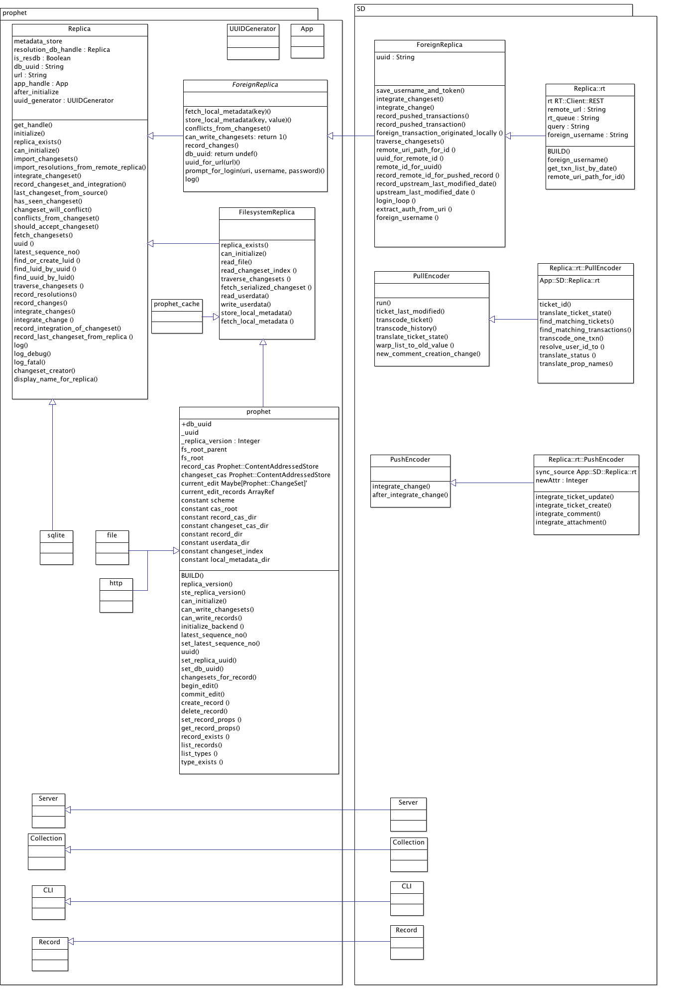

Net-OSLC-CM version 0.01
About this project
Where to begin with OSLC-CM?
About the module Net-OSLC-CM
Installation guidelines
Where to begin with SD ?
Report Bugs
About this project
Net-OSLC-CM is a module to help implement a OSLC client (consumer) for Change Management, according to OSLC-CM specifications v2 .
This module was built and tested using Simple Defects and the OSLC-CM adaptator for Bugzilla. I was working on a local network database and using HTTP basic auth.
Where to begin with OSLC-CM?
OSLC stands for Open Services for Lifecycle Collaboration. The first web site to visit concerning OSLC is open-services.net. This video is a good first entry point for new comers to help catch the goal of OSLC and understand what is at stake.
Plenty of videos and tutorial are available in the "Resources" area to help starting working with OSLC. But the most important documents are the specifications. In this project, I had to focus on the Core and the Change Management (CM) specifications.
A service can be either a Service Provider (which plays the role of the "server") or a Consumer (playing the role of a "client"). In our case, Bugzilla is the Service Provider an SD the Consumer. The bug tickets are called "Change Request".
The main ideas to keep in mind to start implementing a OSLC-CM Consumer are:
- you use the HTTP protocole, basically "GET" requests to pull data and "PUSH"/"POST" requests to push data.
- you manipulate RDF/XML data at least (also JSON support can be implemented), so you'll need a RDF parser and serializer.
- at best, you implement OAuth to protect your data transfers, at least basic auth.
The next step is to read the specs. Or to read a bit of code if as for me it helps you better to understand how all of this works.
The code of some OSLC-CM clients are available (in Java):
About the module Net-OSLC-CM
Net::OSLC::CM provides a Perl interface to help implement OSLC‐CM Consumers according to OSLC specifications described at
open−services.net. In the current state, this module implements function to retrieve changeRequests from Service Providers and Service
Providers Catalog.
It uses HTTP basic authentication to connect to the distant changeRequest database.
Service Providers concepts and relationships - source: OSLC Core specification at open-services.net
Net::OSLC::CM relies on:
- Net::OSLC::CM::Connection
- Net::OSLC::CM::Parser
- Net::OSLC::CM::Catalog
- Net::OSLC::CM::ServiceProvider
- Net::OSLC::CM::ChangeRequest
- Net::OSLC::CM::Util
- Moose
- The classic LWP::UserAgent to establish a connection and perform HTTP requests.
- HTTP::MessageParser to parse HTTP answers
- RDF::Trine was chosen to deal with RDF data because it implements the tools we need to parse it, and later on, serialize it. I use a model stored in RAM memory
Examples
use Net::OSLC::CM;
my $oslccm = Net::OSLC::CM−>new(
url => $self−>remote_url,
username => $username,
password => $password
));
# Getting an array of changeRequests from the changeRequest database
# (array of Net::OSLC::CM::ChangeRequest objects)
my @results = $oslccm−>get_oslc_resources;
get_oslc_resources is a wrapping function that calls successively the following:
$oslccm−>url = "http://example.com";
# RDF data parser
$oslccm−>parser(
Net::OSLC::CM::Parser−>new(cm => $oslccm)
);
# Assumes it'll get a Service Providers Catalog
$oslccm−>create_catalog;
# Gets the catalog (assuming it does exists to get the Service Providers information)
$oslccm−>get_provider_catalog_resource;
# Retrieves URLs of the Service Providers given by the Catalog
$oslccm−>get_service_providers;
# Gets changeRequests URLs from each Service Provider, creates a Net::OSLC::CM::ChangeRequest
# object and pushes it into the $oslccm−>changeRequests array
$oslccm−>get_changeRequests($oslccm−>providers);
# Gets data for each changeRequest
$oslccm−>load_changeRequests();
my @results = $oslccm−>changeRequests;
Some notes
We can search for data in two ways:
- with SPARQL queries and RDF::Query
- with RDF::Helper - this modules allows to map every RDF property as a class attribute, which makes simple "parcours" easy.
What can be improved :
- RDF/SPARQL queries
- implementing OAuth : a Perl module has alredy been implemented that could be used
- "push" side
Installation guidelines
Bugzilla
Bugzilla documentation is very detailed to help install a Bugzilla server. During the process, I only faced some problems with a few Perl module, but they are common problems that you can solve by searching around on the web.
Bugzilla OSCL-CM adaptator
A detailed tutorial is available with all necessary instruction.
You don't necessarily need to install your own Bugzilla database to make it run: you can start by playing with the Bugzilla Test Server.
Be careful with the tutorial references to some code or adaptator, it is not up-to-date.
Also, make sure to upload the Bugzilla code from the git repository of eclipse, no this old SVN repo.
Net-OSLC-CM
The module is available on github:
$ git clone git://github.com/arroway/Net-OSLC-CM.git
To install this module type the following:
$ perl Makefile.PL
$ make
$ make test
$ make install
Simple Defects
First you need to install Prophet. You can follow these instructions.
To run SD for this project, you need to download a dev version.
The module is available on github:
$ git clone git://github.com/arroway/SD.git
To install this module type the following:
$ perl Makefile.PL
$ make
$ make test
$ make install
Where to begin with SD ?
The connectors are in the Replicas directory. For each connector, you'll need to implement three classes:
- connector.pm
- connector/PullEncoder.pm
- connector/PushEncoder.pm
The name you give to your connector.pm class is important because it will be the keyword that SD will use when you clone a repository to know what kind of replica it is dealing with.
$ sd clone --from 'rt:http://my-rt.repo.com'
Those classes heritate from ForeignReplica.pm, ForeignReplica/PullEncoder.pm and ForeignReplica/PushEncoder.pm (run() methods).
Partial UML class diagram - Some inheritance relations between SD and Prophet.
Report Bugs
Please report any bugs to "stephanie.ouillon@telecom−sudparis.eu"